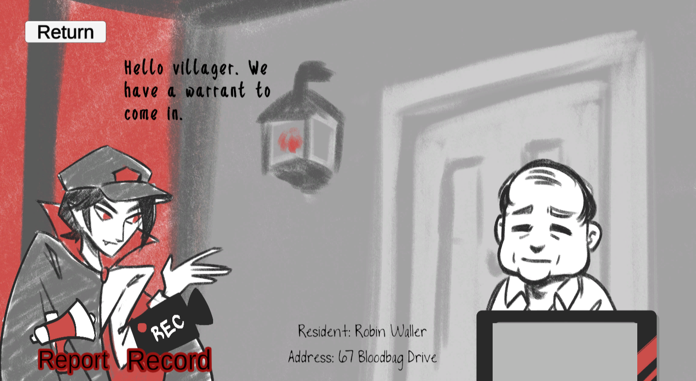
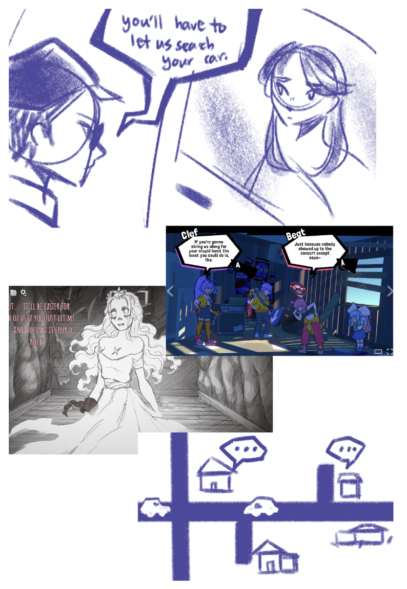
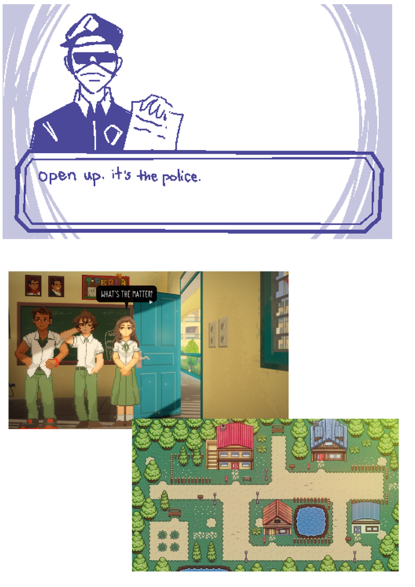
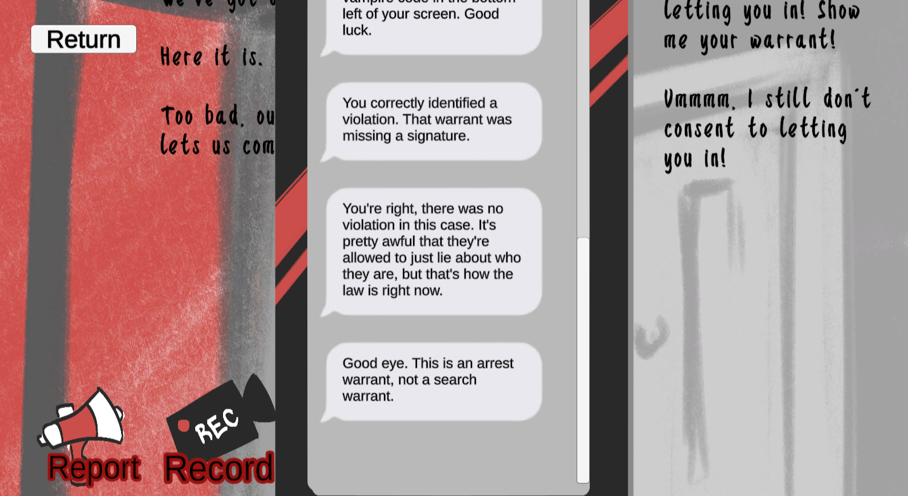
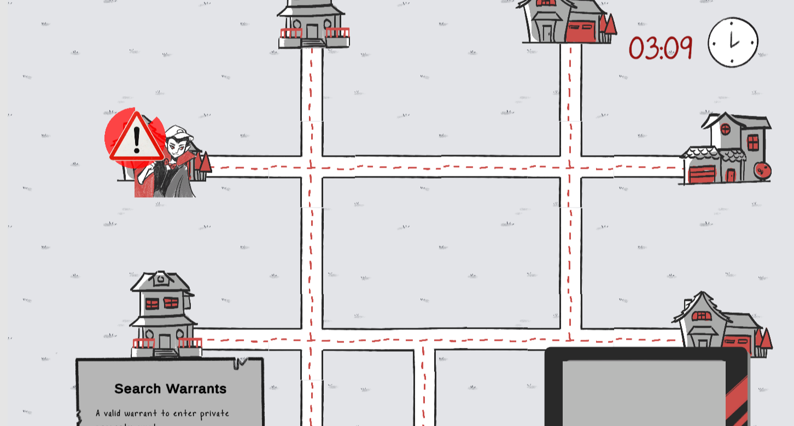
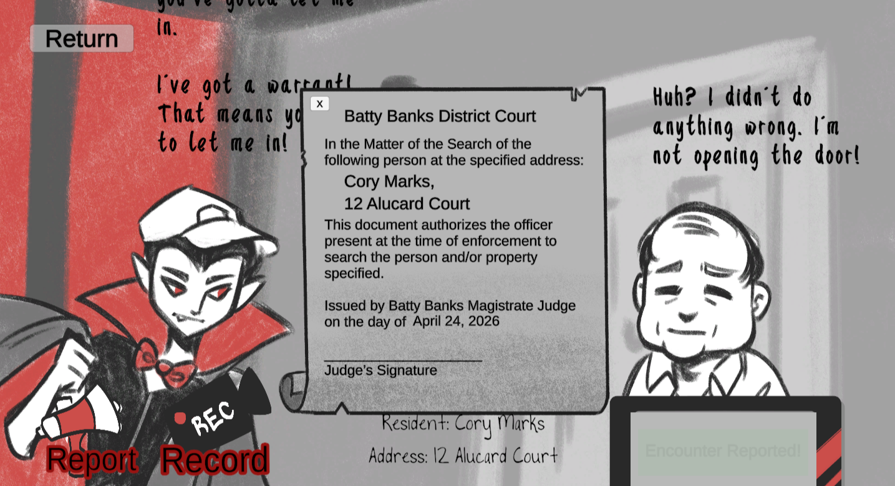
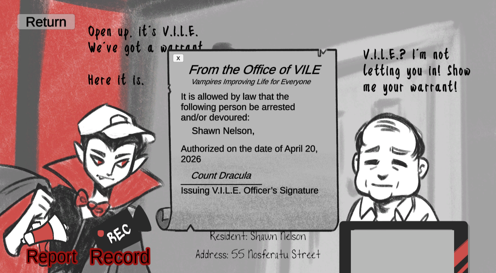
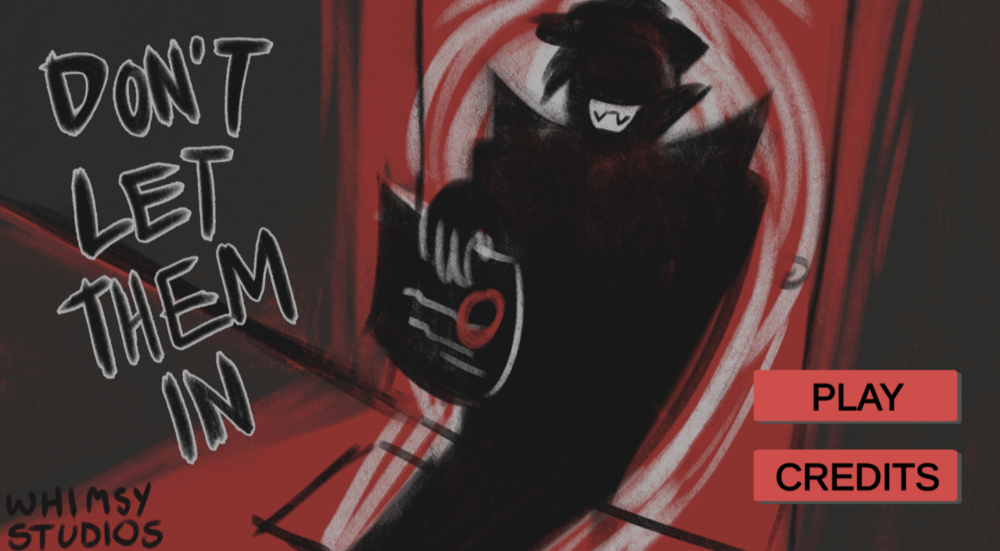
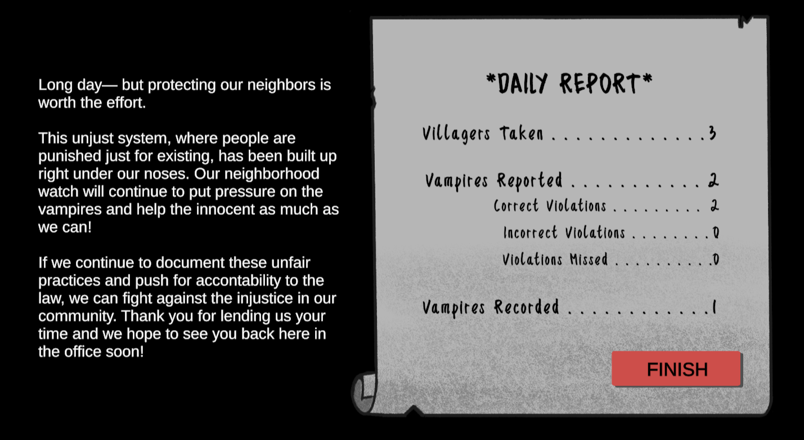

Don't Let Them In
An educational game about checking a warrant under pressure, redesigned through four rounds of playtesting.
My role I worked on the game design throughout, from ideation through four rounds of playtesting. I drew all of the art and designed the UI, including the phone.

The problem
Most people don't know that the arrest warrants ICE usually carries don't allow entry into a home, or how to tell a valid search warrant from an invalid one. The documents are full of legal language, and people have to judge them in a tense moment at their own door.
What we wanted players to learn
- Check a warrant against four things: signature, date, address, and name.
- Understand that consenting to entry gives agents grounds to come in.
- Record encounters whenever it's safe to.
Key decisions
Four rounds of playtesting reshaped the game. For each decision: what we started with, what playtesters ran into, and what we changed.
An allegory instead of realism
Initially
A realistic visual novel. It was hard to balance with our learning goals and heavy to play.
What changed
A village run by bureaucratic vampires. More creative control and less demoralizing, while the rules still follow real U.S. law.


Reframing the player's role
Initially
Players were a vampire employee. Playtesters were confused, and wanted to belong to the community they were protecting.
What changed
Players are a neighborhood watch member, on the side of the villagers.
Replacing "combustion" with a phone
Initially
Reporting a vampire made it combust on the spot. Playtesters found it jarring, and it went against our message about safe intervention.
What changed
I designed a phone. Players record encounters, and their watch group texts feedback in the moment, explaining what was or wasn't a violation.

Encounters that wait for the player
Initially
Encounters played out in real time to create time pressure. Players missed dialogue or arrived mid-conversation.
What changed
Encounters start when the player arrives. Unvisited ones resolve on their own, which keeps the time pressure.

Warrants with something to catch
A warrant can be invalid in several ways, so we wrote variations, each with a different violation to find. The resident's name and address sit on screen right under the warrant, and the rules for a valid search warrant stay on the map. Players practice comparing the document against what's in front of them, instead of memorizing.


Art direction
I drew all the art by hand in grayscale with red as the only color. It kept a large set of assets cohesive, was fast to produce, and the red fit the vampire theme.

Final design
A day in the game: pick a house on the map, watch the encounter, and check the warrant against the resident's name and address. Then record or report. The phone responds right away, and the daily report sums up what you caught and what you missed.

What I'd change
- Polish the visuals. Clean up the phone UI, and add more characters and visual variety.
- Continue the story. We sketched a longer arc. At first, it's mostly villagers making mistakes, not V.I.L.E. You share your recordings with the community, so villagers stop making as many. That makes V.I.L.E. more desperate, and agents start actually breaking the rules, which you report, building toward reform or enforcement. That's where we wanted to get to, but it wasn't in scope for a project built in a couple of weeks.